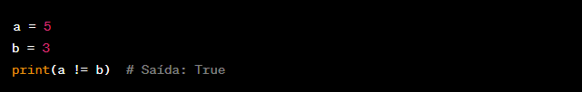

◉ Operadores aritméticos
➤ Os operadores aritméticos do Python são símbolos especiais utilizados para realizar
operações matemáticas entre valores numéricos. Eles permitem que você execute operações como adição,
subtração, multiplicação, divisão, exponenciação, entre outras.
Os principais operadores aritméticos do Python são:
Adição (+): Realiza a adição entre dois valores. Também pode ser utilizado para concatenar strings.
Exemplo:
Subtração (-): Realiza a subtração entre dois valores.
Exemplo:
Multiplicação (*): Realiza a multiplicação entre dois valores.
Exemplo:
Divisão (/): Realiza a divisão entre dois valores. O resultado é um número de ponto flutuante.
Exemplo:
Divisão inteira (//): Realiza a divisão entre dois valores e retorna apenas a parte inteira do resultado,
descartando a parte decimal.
Exemplo:
Resto da divisão (%): Retorna o resto da divisão entre dois valores.
Exemplo:
Potenciação (**): Realiza a elevação de um número à potência de outro número.
Exemplo:
◉ Operadores de comparação
➤ Os operadores de comparação do Python são utilizados para comparar valores e retornar um resultado booleano
(verdadeiro ou falso) com base na comparação. Eles permitem que você compare valores e realize testes condicionais.
Os principais operadores de comparação do Python são:
Igualdade (==): Verifica se dois valores são iguais.
Exemplo:
Desigualdade (!=): Verifica se dois valores são diferentes.
Exemplo:

Maior que (>): Verifica se um valor é estritamente maior que outro.
Exemplo:
Menor que (<): Verifica se um valor é estritamente menor que outro.
Exemplo:
Maior ou igual a (>=): Verifica se um valor é maior ou igual a outro.
Exemplo:
Menor ou igual a (<=): Verifica se um valor é menor ou igual a outro.
Exemplo: